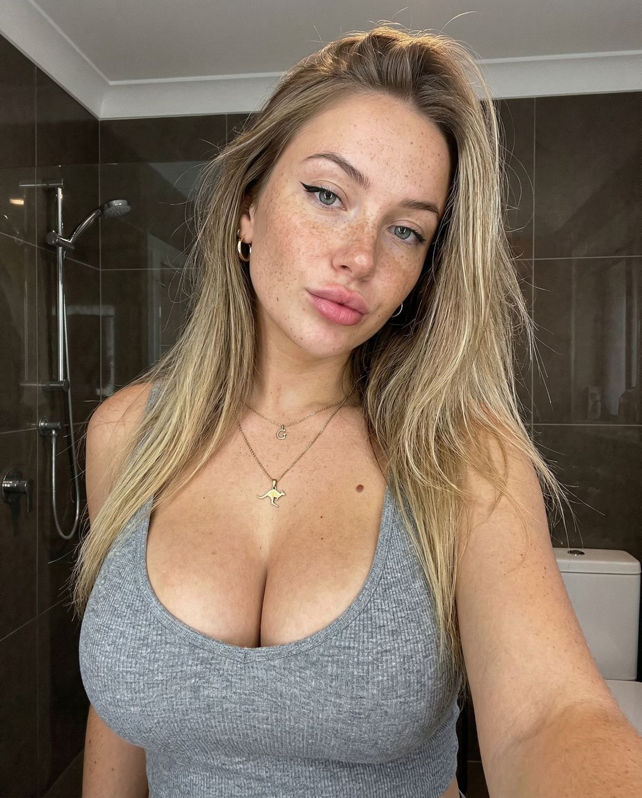
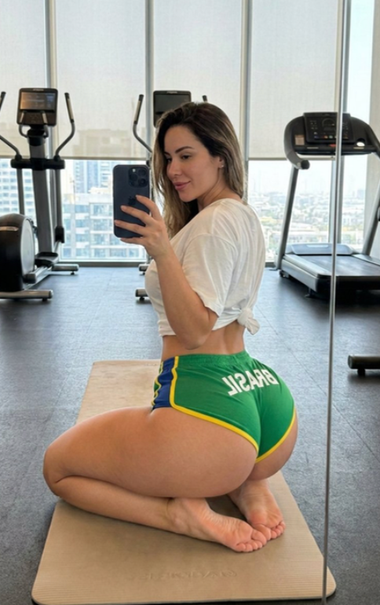
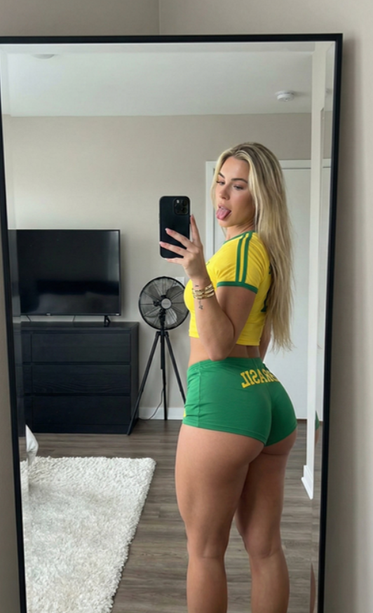
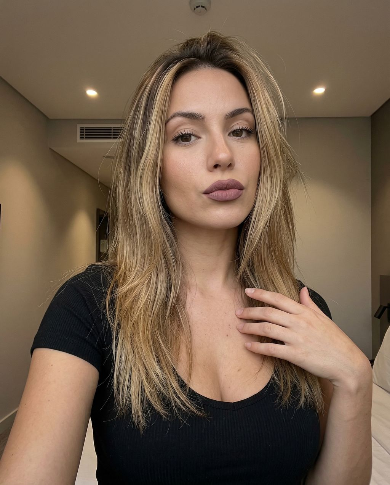
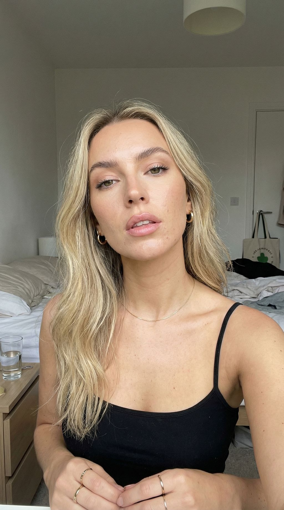

Tutoriais
Aprenda o passo a passo para usar as ferramentas e criar conteúdos com IA.
Entre para acessar seus prompts, materiais e conteúdos exclusivos.
Por segurança, defina uma senha definitiva para substituir a senha temporária antes de continuar.
Informe o e-mail cadastrado. Vamos te enviar um link para você criar uma senha definitiva — seja para trocar a senha temporária pela primeira vez, ou porque esqueceu sua senha atual.
Aqui você encontra seus tutoriais, workflows, prompts e extras organizados para criar conteúdos com inteligência artificial.
Crie personagens virtuais com aparência, personalidade e estilo definidos. Mantenha sua modelo consistente em todos os conteúdos que você gerar.
Aprenda o passo a passo para usar as ferramentas e criar conteúdos com IA.
Imagens e prompts prontos para copiar e usar direto na sua criação.
Processos organizados para transformar sua ideia em conteúdo de forma mais rápida.
Biblioteca de prompts prontos para imagens, vídeos, personagens e criação de conteúdo.
Referências e prompts exclusivos para criações destinadas ao público maior de 18 anos.
Materiais complementares, como esteira de aquecimento de conta e garimpo de modelos reais.
Extensões prontas para baixar vídeos, fotos e stories direto do navegador.
Limpe metadados, converta formatos e proteja seus criativos, tudo liberado pra você.
Assista às aulas diretamente nesta área. Os vídeos são adicionados pelo administrador.
Mostrar o que é a plataforma e o resultado que o usuário pode alcançar.
Criar a personagem/persona visual que será utilizada no projeto.
Ensinar pesquisa, referências e organização de material.
Conheça a ferramenta Ruuninghub e aprenda como utilizá-la na criação de conteúdos.
Aprenda a criar imagens +18 e preparar o prompt para gerar o resultado desejado.
Mostrar o fluxo de troca de rosto dentro do processo.
Transformar imagens em um fluxo de produção de vídeos.
Aprenda a gerar vídeos usando uma imagem de referência e um prompt bem estruturado.
Aprenda a utilizar o More Login.
Imagens originais importadas da galeria do Notion. Clique na imagem para abrir o prompt.

Retrato frontal, fundo branco, proporção 1:1 e aparência natural de foto de RG.

Troca de identidade com integração natural de rosto, cabelo, luz e textura.

Variações de uma mesma sessão para criar um carrossel consistente.

Folha de referências com frente, perfis e ângulos de três quartos.

Restauração fotográfica com nitidez natural, textura real e sem aparência artificial.
Grade de nove vistas para manter a mesma identidade em diferentes ângulos.
Referências visuais e prompts exclusivos para criações adultas. Clique na imagem para abrir o prompt.
Conecte-se com a comunidade CAPIVARA CLUB HOT
Gateway de pagamento para receber e gerenciar seus pagamentos online.
Tenha acesso a uma gateway de pagamento para facilitar suas vendas e organizar seus recebimentos.
Automação inteligente para agilizar sua rotina de criação e vendas.
Um bot pensado para automatizar tarefas do seu dia a dia, economizando tempo e organizando seu fluxo de trabalho.
Automação inteligente para agilizar sua rotina de criação e vendas.
Conheça o Ravenbot e descubra como a plataforma pode facilitar sua operação.
Indique a CAPIVARA CLUB HOT para outras pessoas e ganhe recompensas por cada indicação.
O saque fica disponível a partir de R$ 50,00.
Usuários que se cadastraram pelo seu link.
Informe seus dados para receber a comissão. O pedido ficará reservado enquanto a equipe organiza o pagamento manual.
Fluxos de trabalho para você seguir do planejamento até a publicação do conteúdo.
Workflow completo para transformar uma ideia em uma imagem pronta.
Baixar workflow →Processo para transformar imagens em vídeos com movimento.
Baixar workflow →Workflow para criar prompts de vídeo a partir da imagem carregada.
Baixar workflow →Versão avançada para criar vídeos com movimento e controle de composição.
Baixar workflow →Workflow para testar diferentes looks e trocar a roupa da imagem.
Baixar workflow →Workflow para aumentar a resolução e melhorar a qualidade das imagens.
Baixar workflow →Workflow para criar rostos e gerar prompts a partir da referência escolhida.
Baixar workflow →Workflow para gerar diferentes ângulos a partir da mesma imagem de referência.
Baixar workflow →Workflow de troca de rosto usando o modelo Flux.
Baixar workflow →Workflow para controlar movimento e criar vídeos com mais precisão.
Baixar workflow →Escolha uma categoria e clique em VER PROMPT para visualizar o conteúdo.
Materiais complementares para facilitar sua produção e organização.
Material exclusivo para preparação e aquecimento da conta.
Guia prático para entender e melhorar o desempenho no orgânico.
Plataforma para conteúdo e garimpo de modelos reais.
Acessar →Use o Gemini para analisar imagens e extrair prompts detalhados.
Acessar →Acesse o Divine Nudes para encontrar referências de modelos reais.
Acessar →Ferramenta indicada para acessar o conteúdo do Divine Nudes.
Acessar →Referências de fotos +18 para utilizar em seus projetos de faceswap.
Acessar →Extensões e complementos para potencializar seu fluxo de trabalho.
Todas as ferramentas da CAPIVARA CLUB HOT estão liberadas para você. Sem bloqueios, sem plano premium e sem necessidade de faturamento.
Remove dados sensíveis de mídias
Converta entre 9:16 e 3:4
Hash 100% único + técnicas avançadas
Limpa, redimensiona e cloaqueia de uma vez
Hash único + proteção avançada
Corta vídeos no tempo desejado
Adiciona watermark em vídeos e imagens
Cria versão censurada para preview
Capivara DuHot.
EXEMPLO: 1 reel (se houver 3 contas, logo, 3 reels ao todo deverão ser produzidos no dia);Destaques geralmente são: 1. Telegram (fotos sensuais) 2. Pessoa (fotos da modelo) 3. Nicho (profissão) 4. Lifestyle (dia a dia ou comidas)
No dia 4 a conta de links passará de pública para privada, portanto não postaremos mais nela, diminua uma conta de agora para frente.
Exemplo: 3 contas até dia 4 ---> 2 contas do dia 5 para frente
Destaques geralmente são: 1. Telegram (fotos sensuais) 2. Pessoa (fotos da modelo) 3. Nicho (profissão) 4. Lifestyle (dia a dia ou comidas)
Destaques geralmente são: 1. Telegram (fotos sensuais) 2. Pessoa (fotos da modelo) 3. Nicho (profissão) 4. Lifestyle (dia a dia ou comidas)
Destaques geralmente são: 1. Telegram (fotos sensuais) 2. Pessoa (fotos da modelo) 3. Nicho (profissão) 4. Lifestyle (dia a dia ou comidas)
Destaques geralmente são: 1. Telegram (fotos sensuais) 2. Pessoa (fotos da modelo) 3. Nicho (profissão) 4. Lifestyle (dia a dia ou comidas)
Seu perfil está ruim ou você está lendo a métrica errada? A principal coisa é saber todas as possíveis lacunas e saber a causa de cada um desses problemas. Isso só vale para orgânico.
“Meu perfil não viraliza.”
Você sabe metrificar quantas views indicam que um perfil é viral ou não?
Agora que você sabe metrificar, veja as causas de um perfil ter menos de 3 mi views mensais:
Teste a mesma modelo em 3 perfis. Melhore a qualidade dos vídeos e faça algo diferente. Não adianta fazer igual a milhares de concorrentes e esperar outro resultado.
As faixas deste guia são referências da experiência no orgânico.
“Viralizo, mas ninguém vê meus stories.”
Você precisa saber o que é viralizar e qual quantidade de views nos stories é boa. Não adianta achar que 1 mi views mensais já resolve tudo.
Valores observados na experiência; não são garantia de lucro.
Melhore a qualidade dos vídeos, faça conteúdos mais chamativos e coloque uma CTA chamando a pessoa para o perfil. Ela precisa ter um motivo para sair do reel e abrir seus stories.
“Minha conversão é muito ruim.”
Primeiro de tudo: você precisa ter volume, somando views totais e views nos stories. Não adianta pensar em funil com menos de 1k nos stories. A análise do funil deve começar com, no mínimo, 100 starts.
O que deve ser analisado: starts por venda.
Exemplo: 100 pessoas entraram no seu bot e 5 compraram. Isso dá 1 venda a cada 20 starts. Não olhe só a porcentagem de conversão que aparece.
VSL: no máximo 10 segundos. Deve aparecer o rosto da modelo e uma prévia do grupo VIP. Use uma música envolvente, mais forte e que não seja lenta.
Copy escrita: prometa tudo o que seu VIP realmente entrega. Seja específico sobre conteúdos, acesso e frequência.
Arraste a foto para posicionar e use o controle para dar zoom.